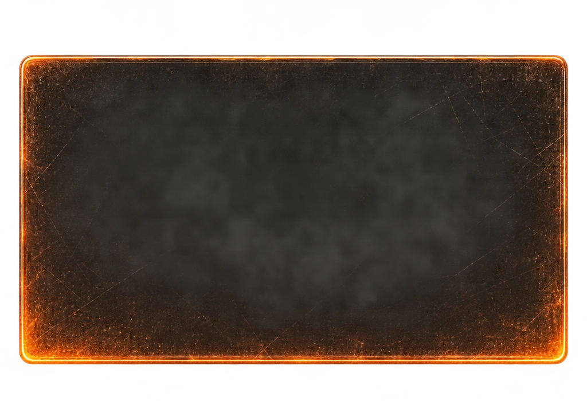
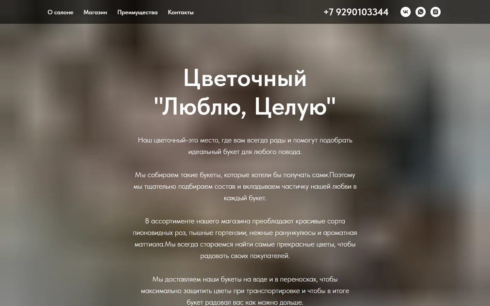
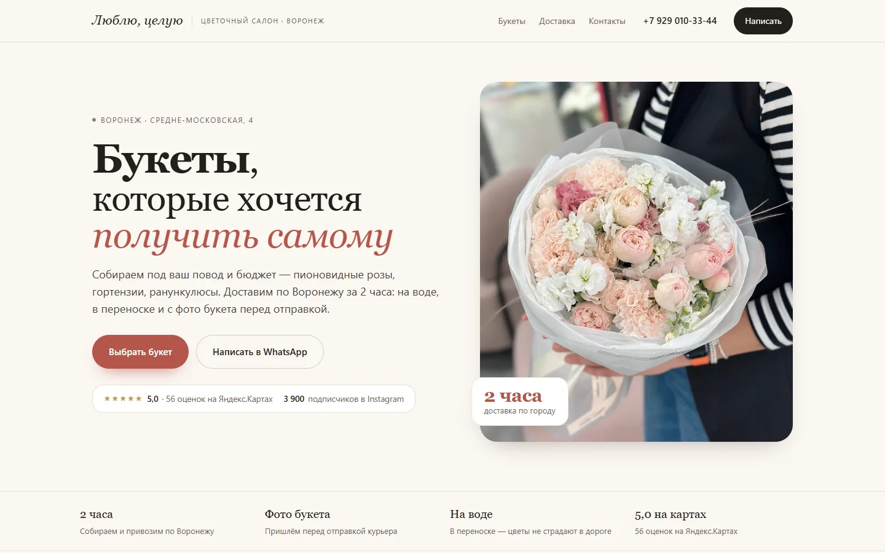
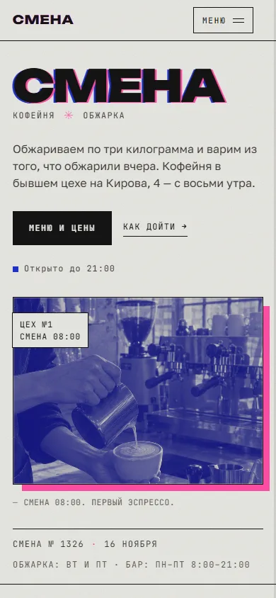
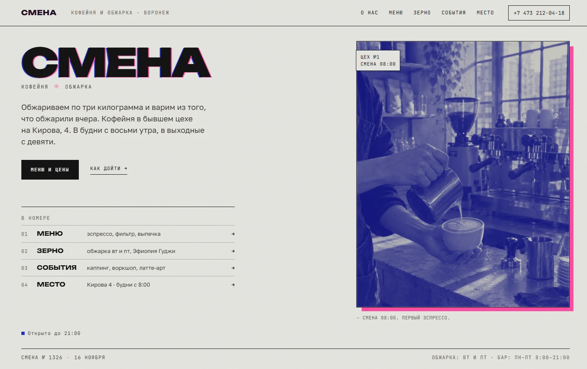

Небольшие сайты для небольших дел:
цветочный салон, кофейня, мастерская.
Делаю сам. Воронеж, работаю по России.
Выдуваю сайты, как стекло
Потрогать стеклоДва макета, сделаны руками
Это образцы, а не заказы клиентов



Цветочный салон:
букет за две минуты
«Люблю, целую» придуман, я сделал его как образец. Задача была простая: человек заходит с телефона и сразу понимает, какой букет взять и сколько это стоит. Слева страница, которая была, справа моя.


Что именно сделано
- Собрал выбор: повод, размер, бюджет. Вместо простыни текста.
- Поставил цены S, M, XL и кнопку заказа в мессенджер. Текст заказа подставляется сам.
- Проверил на телефоне и с клавиатуры. Без JavaScript страница тоже читается.
Цифр и отзывов у макета нет.
Что здесь честно
Салон выдуман, заказы ненастоящие. Всё на странице придумано для примера.
Второй макет ниже, кофейня: там меню с фильтрами и часы работы.
Кофейня и обжарка:
меню и фильтры
«Смена» придумана: кофейня в бывшем цехе на Кирова, 4. Второй образец. Внутри меню с фильтрами, часы работы и номер смены.


Главная · первый экранмобайл 390 / десктоп 1440
Что именно сделано
- Меню с фильтрами «кофе / не кофе / еда», счётчик позиций и ровные цены.
- Часы «открыто до…», номер смены и меню, которое работает с клавиатуры.
- Бумага, кобальт и розовый. Фото в дуотоне, шрифты лежат в проекте.
Название, меню и события придуманы.
Что здесь честно
Отзывов, логотипов клиентов и цифр здесь нет: их пока не существует.
Чужие работы своим именем не подписываю, поэтому в портфолио только мои макеты.
Как я работаю
Одинаково на любом проекте: сначала разговор, потом структура, потом сборка, потом проверка.
-
Разговор
Кто ваш покупатель, что он должен понять за первые секунды и что сделать. Пока не ясно, к вёрстке не приступаю.
-
Структура
Решаем, что на странице главное: где цена, где доказательство, где кнопка. Согласуем до того, как появится код.
-
Вёрстка
Текст, шрифты, отступы, мобильная версия. Сайт простой: открывается быстро и не зависит от чужих сервисов.
-
Проверка
Телефон, клавиатура, контраст, медленный интернет. После запуска правки и вопросы на мне.
Что можно заказать
- Сайт-визитка
- Чем вы занимаетесь, где вас найти и как написать. Для мастера, врача, репетитора.
- Витрина с выбором
- Товар с ценой и заказом в мессенджер: цветы, кофе, мебель, услуги.
- Разбор старого сайта
- Сайт есть, но с него не пишут. Посмотрю, где теряется человек, и скажу, что менять первым.

Меня зовут Юрий.
Делаю сам, от первой встречи до запуска.
Без агентства и менеджеров: вы говорите со мной, я же и собираю страницу. Беру небольшие дела, где сайт нужен, чтобы человек выбрал и написал.
В портфолио два демо-макета. Чужие работы своим именем не подписываю. Следующим станет ваш сайт.
Расскажите, чем занимаетесь
Двух-трёх предложений хватит: что за бизнес, что хотите показать и как сейчас принимаете заказы. Отвечу в тот же день и скажу прямо, что стоит делать, а что нет.
Если сайт уже есть, пришлите ссылку: посмотрю, что мешает людям вам писать.